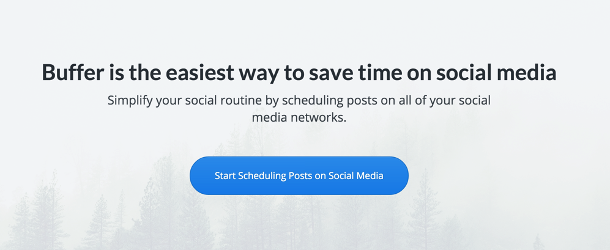

March 24, 2015


From Matthew Butterick, in an article titled, “The billionaire’s typewriter”
But unlike the Times, Medium pays for only a small fraction of its stories. The rest are submitted—for free—by writers like you. After a long time being elusive about its business model, Medium revealed that it plans to make money by—surprise!—selling advertising. This means displaying ads, but also collecting and selling data about readers and writers. So Medium will extract revenue from every story, whether it paid for that story or not. (By the way, will that revenue be shared with writers? Um, no.)
And coming full circle—what’s the indispensable tool for creating this illusion of an editorial ecosystem? The homogeneous design. The butterfly ballot of 2000 (depicted in why typography matters) proved that errors of typography can have historic consequences. Medium proves that typography can be used as a tool of economic leverage and control.
In truth, Medium’s main product is not a publishing platform, but the promotion of a publishing platform. This promotion brings readers and writers onto the site. This, in turn, generates the usage data that’s valuable to advertisers. Boiled down, Medium is simply marketing in the service of more marketing. It is not a “place for ideas.” It is a place for advertisers. It is, therefore, utterly superfluous.
As a writer, the state of writing on the web in 2015 is not good. That’s not to say the tools for writing have dried up (there are more now than ever)—it’s just that now, instead of simply writing, I have all sorts of internal issues. Who owns my content? If I don’t own it, who does? Does it matter? Is “homogeneous design” something I even care about?
So here’s where I’m coming from. I have a job that pays the bills, so when I want to get some thoughts into the cloud, I’m not doing it for money, I’m doing it to be a citizen in the communities I care about. As Austin Kleon says in Show Your Work!, “By generously sharing their ideas and their knowledge, they often gain an audience that they can leverage when they need it—for fellowship, feedback, or patronage.” For that goal, Medium, and social media platforms like Facebook and Twitter, are perfect. Sure, everything you see on the page looks exactly the same—same typography, same basic structure—but it’s an instant way for a writer to connect to, and discover, the people they care about. It’s not that I’m lazy, or that I’m unknowingly trading my freedom to be on some Big Brother marketing platform (the billionaire’s typewriter), I’m just in a place in my life where I’m happy to share my thoughts on a platform someone else has created because they’ve removed all the barriers and invited all my friends. It’s a party I didn’t have to plan… I just had to show up.
Medium, for example, has a CMS that anyone on the planet can use, and a design that certainly doesn’t insult my sensibilities. Call it minimalist, homogeneous, whatever—as a writer, I can get in, write something, and send it off to my friends without worrying if it looks good or not.
My only issue with Medium is that its users are fairly anonymous. If I want to find a writer, I have to figure out what their Medium username is, then toss it to the back of the standard Medium URL. Too often, I’m just cycling through articles without ever knowing who the author is—it’s just a mad shuffle of big ideas and original thoughts from people I might not ever know.
What Medium needs is custom domains. I want to be able to tell a friend to check out chrishall.pizza, not medium.com/@hashtaghall. I’m far too Gen X to want to be a blatant “corporate stooge,” but the Millennial in me just needs a little recognition to be appeased. Give me that level of individuality and I could care less if they leverage my writing to make some money. It wasn’t written to be a profit center anyway.
In the piece linked above, Matthew Butterick paints a solid picture of why someone like himself shouldn’t use Medium. He, like many, value things like site individuality and varied typography more than I do. And he may have a soapbox with Practical Typography that pays the bills and connects him to more people than I will probably ever know. But I don’t think many people want to blog full-time (it’s harder than many think), and they’d probably do anything to avoid having to make design decisions and worry about server costs. They just want to write somewhere their work will be read. And Medium lets them do that.
March 23, 2015


For those of us who live in temperate climates, it’s difficult to imagine
the unfolding horror of a category 5 tropical cyclone bearing down on your
home with winds exceeding 200 mph. But that was the scenario facing the
inhabitants of the far flung islands of Vanuatu recently. The tiny Pacific
Ocean island archipelago took a direct hit from Cyclone Pam, resulting in
many villages being entirely flattened.
Incredibly and thankfully, the death toll as a result of the storm has been kept to a minimum, but a large section of the population has been left without food, water, and housing. Now a major relief operation is underway involving NGOs and neighbouring governments from the South Pacific region such as New Zealand and Australia. Technology is also playing a part in the recovery with power and communications providers rallying to get services running again quickly. We have seen encouraging reports suggesting that some progress is being made, against all odds.
It’s not the first time a huge cyclone has ravaged communities in the
Pacific. Typhoon Haiyan wreaked havoc across the islands of the Philippines
in 2013. You may recall our efforts to contribute during the Haiyan relief
operation. With your help, we will be financially supporting UNICEF’s operation on the ground in Vanuatu today with an immediate donation of $6,500. We are thrilled to learn that our cash will pack twice the punch because New Zealand philanthropists Gareth and Jo Morgan have agreed to match the first $1 million in donations.
iwantmyname has a longstanding policy of setting aside 10 cents from every
domain registration for charitable purposes, but with the crisis being so
great, we’ve dug a bit deeper to help out our neighbours in their time of need. If you want to make your own donation to the Vanuatu relief fund, you can do so here.
(Photo by Dave Hunt-Pool/Getty Images)
March 19, 2015

From Rodolphe Dutel – Buffer:
There was a great blogpost that Joel wrote on how to name your startup, where he mentioned that the domain name of your startup doesn’t matter. In fact, thinking about Buffer’s own domain history, we originally started out with bfffr.com, when Joel launched Buffer in late 2010.
Joel went on to change it to bufferapp.com, to make things more clear and worry less about not having the exact domain of your startup’s name, “Buffer” in our case. It can be a huge time-suck in the early days of your company, where your first and foremost goal should be to hit product-market fit and building something people want.
Spending time on acquiring a certain domain name could be a very futile exercise without a product that works. In fact, as Joel illustrates, most well-known companies all had “placeholder” domains for a long time before they got their actual name as their domain too:
- Square was squareup.com
- DropBox was getdropbox.com
- Facebook was thefacebook.com
- Instagram was instagr.am
- Twitter was twttr.com
- Foursquare was playfoursquare.com
The primary point of the post is to tell the story of how Buffer acquired buffer.com, but the real story to me is that while most of us aren’t “generat(ing) over $5m/year,” and probably don’t have the time or money to pay what it would cost to get a short .com in 2015, there’s no reason you can’t get to that level of success with a domain name you find less than perfect. Buffer had a $60m valuation while using bufferapp.com, and the roster of huge brands listed in the post that started with dodgy domains is pretty incredible.
If you take anything away from this, it’s that the domain name you choose is only a minor piece of a very large puzzle. Before you go throwing resources at the domain aftermarket, just grab a name that fits and make your product as solid as it can possibly be. Good work attracts customers—your domain is just a sticker on the door.
March 17, 2015

From Steve Benjamins – Site Builder Report:
The culture at Virb began to shift after the GoDaddy acquisition. There were now new bosses and new goals— but not ones that aligned with Virb’s original vision. The 4 original Virb team members decided it was time to leave.
“It was clear to me that our new leadership wanted to extract as much money from our customers as possible.” Ryan Clark, Virb’s Product Manager and Creative Director at the time says. “Our new directive was simple: revenue.”
To make matters worse, the Virb team was denied any resources. After losing the 4 original Virb team members Clark notes, “All of my requests to fill the positions disappeared in the ether of the acquisition. It seemed clear to me that GoDaddy had no intention of backing up their new goals for us with the resources to actually achieve them.”
This isn’t so much an indictment of GoDaddy, as they clearly acquired Media Temple to better compete in the web hosting game (Virb just happened to be part of the deal), but it’s sad to see a once-promising platform slow to a grind. As a writer who frequently uses all-in-one platforms to get ideas on the web, I’ve primarily moved on to Squarespace. It’s fast enough, beautiful, and best of all, dead simple to use. Hopefully we’ll see other hosted, all-in-one solutions take up the torch though—competition in the space is what drives innovation.
Read more →
March 16, 2015
{{ template “youtube” “UlJku_CSyNg” }}
The internet has come a long way in the last 30 years. Happy belated (.com turned 30 on March 15th)!
March 11, 2015
From Mike Carson:
Exactly one year ago today I created a list of the top .io domains. At that time there were only 676 .io domains in the top 1 million sites in the world (from Alexa). In one year that number has more than doubled to 1457.
Here’s a little sample (the top 10):
- github.io – rank 307
- codepen.io – rank 1372
- soup.io – rank 3161
- intercom.io – rank 3375
- t411.io – rank 3477
- meduza.io – rank 3546
- keywordtool.io – rank 3637
- popcorntime.io – rank 4816
- spring.io – rank 5566
- greenhouse.io – rank 6263
Short lists are interesting. Massive lists are amazing.
March 11, 2015
From Melody Kramer:
After we drank tea, I watched Betty read articles on her iPad. Her Internet was really slow. She kept accidentally clicking on the ads, or on parts of the story that she didn’t mean to click on. And she was getting a bit frustrated and worried — that by clicking on something, she was going to install malware or not be able to return to her story.
There are 13 million people between the ages of 75 and 84 in the US. There are 5 million between the ages of 85 and 94. (census) That population will grow. At some point, it will be composed of digital natives but that’s a while away. In the interim, are there better ways to design websites for this population? Are there better ways to design the news for them? Of course.
Like any good web entity, we’re always planning for the next evolution of our website. Whether we like it or not, trends change, platforms that were built for one thing get weighed down by incremental additions, and new technologies emerge (like responsive design) that change how sites move through the world. Those things are always moving targets that need to be addressed, but one factor that cannot be overlooked, no matter when your design/redesign occurs, is usability. At the end of the day, the single most important thing you can offer is an easy path from idea to completion.
Here’s a good example of where the internet is going. After I wrote our post about .money, I started looking through various finance websites. What I found didn’t really surprise me, but it’s worth noting nonetheless.
Read more →
March 10, 2015

Money is a hard thing for a lot of people to talk about, so let’s shift the focus a bit by putting a “.” in front.
- money = aghhhhhhh
- .money = awesome!
So what should the people of the internet do with their new .money (domains… .money goes live tomorrow)? Let me count the ways.
Read more →
March 4, 2015
Heads up, folks. We’re not fond of domain extension price increases, but we have two to announce, both of which affect the registration and renewal costs for the domains.
May 1, 2015 – .INFO
- $15.50 to $16.50 USD
- €11.90 to €12.90 EUR
- £10.90 to £11.50 GBP
- $19 to $19.90 AUD
April 1, 2015 – .MU
- $99 to $119 USD
- €89 to €129 EUR
- $159 to $169 NZD
- £78 to £89 GBP
- $119 to $169 AUD
If you have any questions about the price increases, please get in touch.
March 2, 2015
From Hal Hodson – New Scientist:
A Google research team is adapting that model to measure the trustworthiness of a page, rather than its reputation across the web. Instead of counting incoming links, the system – which is not yet live – counts the number of incorrect facts within a page. “A source that has few false facts is considered to be trustworthy,” says the team (arxiv.org/abs/1502.03519v1). The score they compute for each page is its Knowledge-Based Trust score.
The software works by tapping into the Knowledge Vault, the vast store of facts that Google has pulled off the internet. Facts the web unanimously agrees on are considered a reasonable proxy for truth. Web pages that contain contradictory information are bumped down the rankings.
So much time and effort these days goes into search engine optimization (SEO), but every time I see an article like this, I see a day in the far-off future where all the “tips and tricks” will be replaced by variations of a single question—is your website helping the world or hurting it?
Older posts